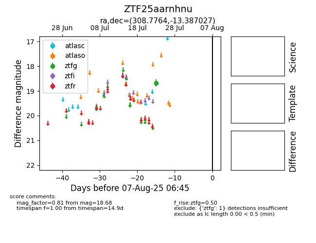

Target ZTF25aarnhnu at 2025-08-07 07:30, see:
FINK: fink-portal.org/ZTF25aarnhnu
Lasair: lasair-ztf.lsst.ac.uk/objects/ZTF25aarnhnu
ALeRCE: alerce.online/object/ZTF25aarnhnu
alt names
ZTF25aarnhnu (ztf,fink)
coordinates:
equatorial (ra, dec) = (308.7764,-13.38703)
galactic (l, b) = (32.1347,-28.94623)
photometry
last ztfg=18.68
1 ztfg detections
